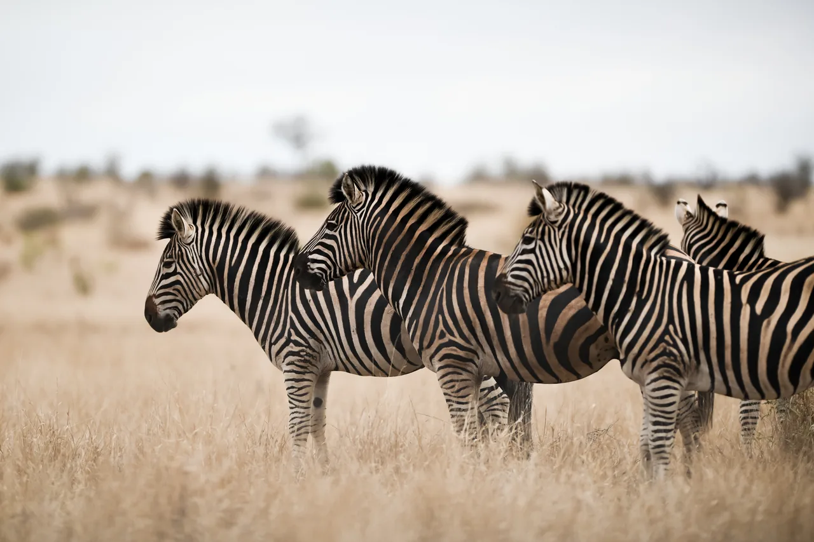
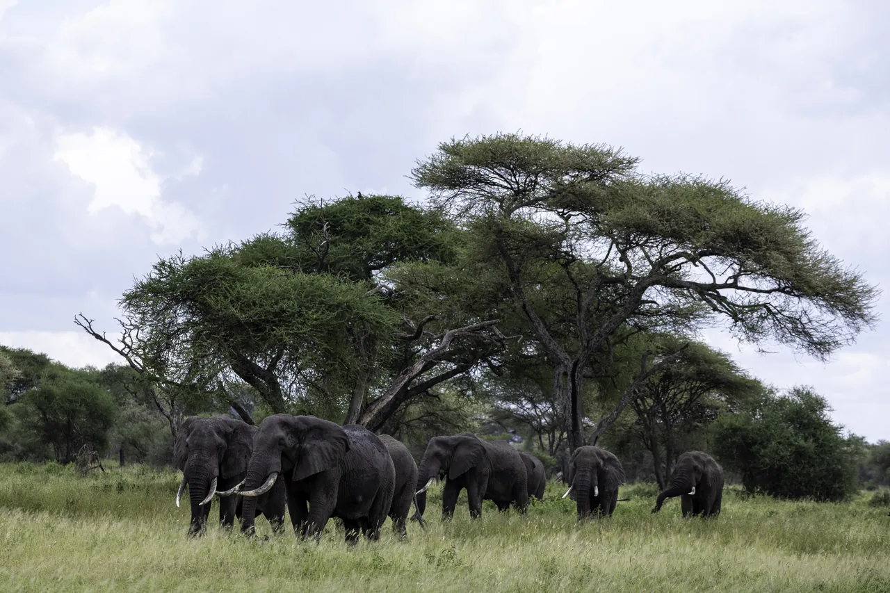
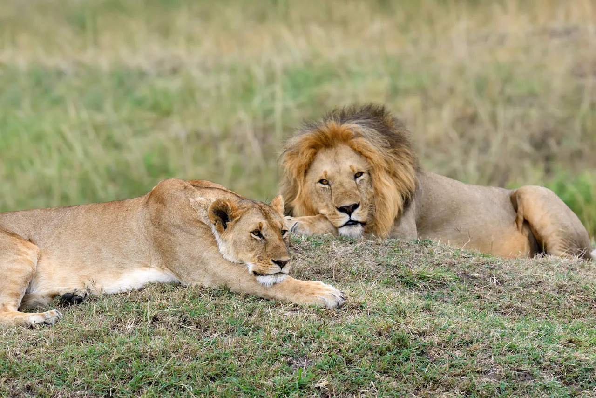
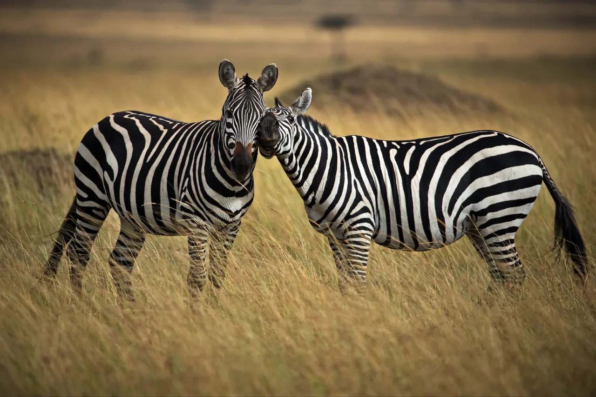
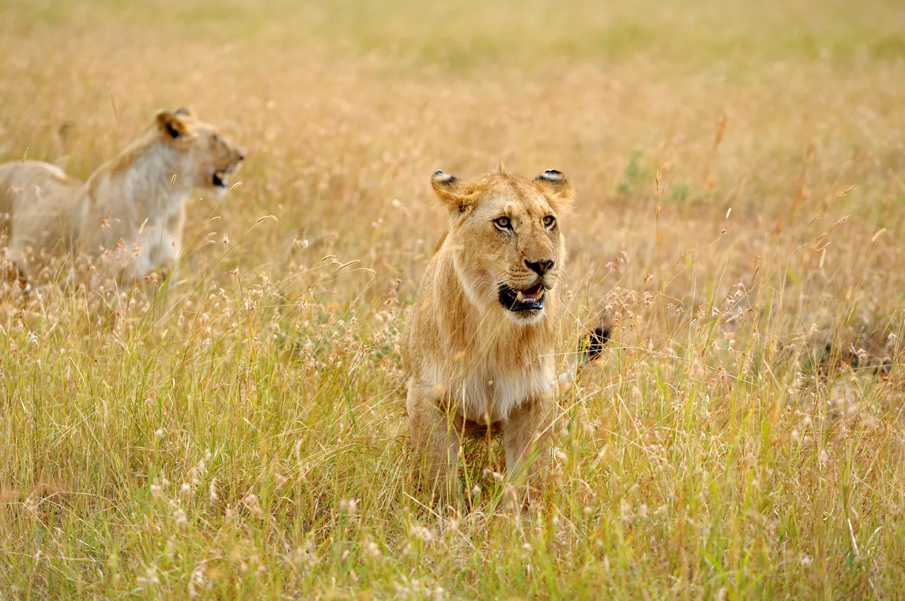
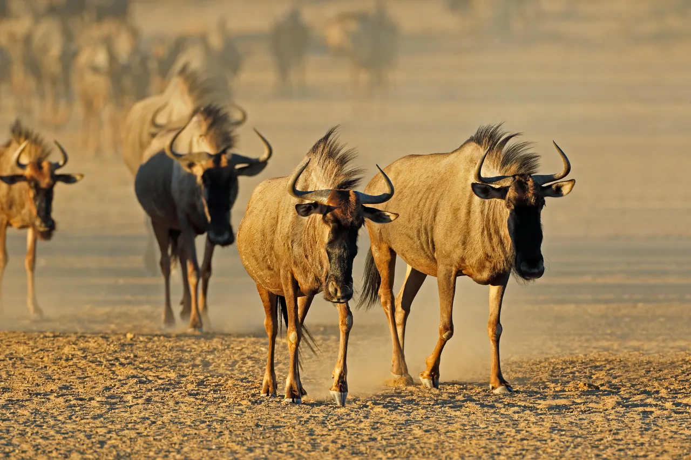
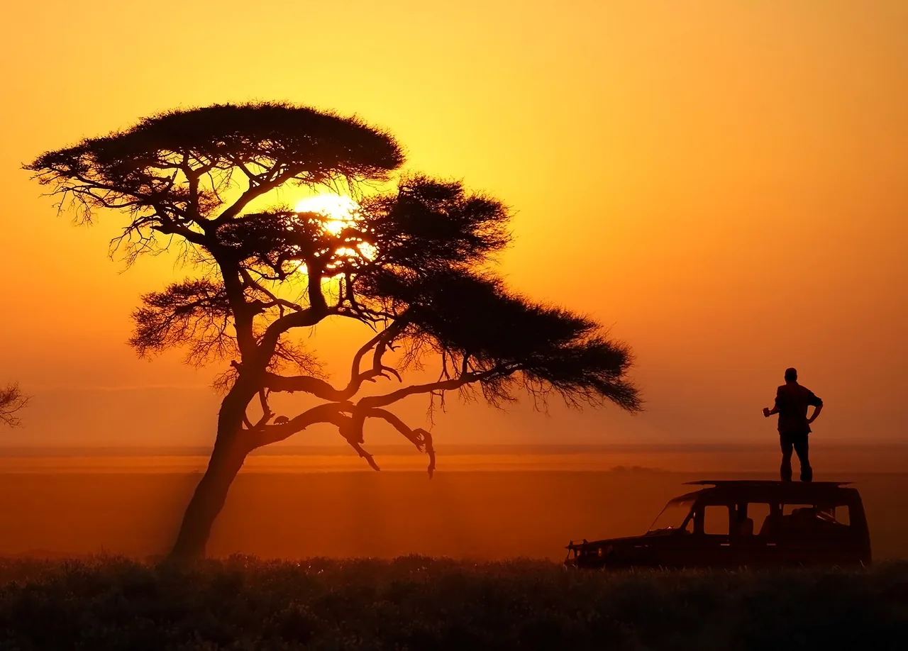
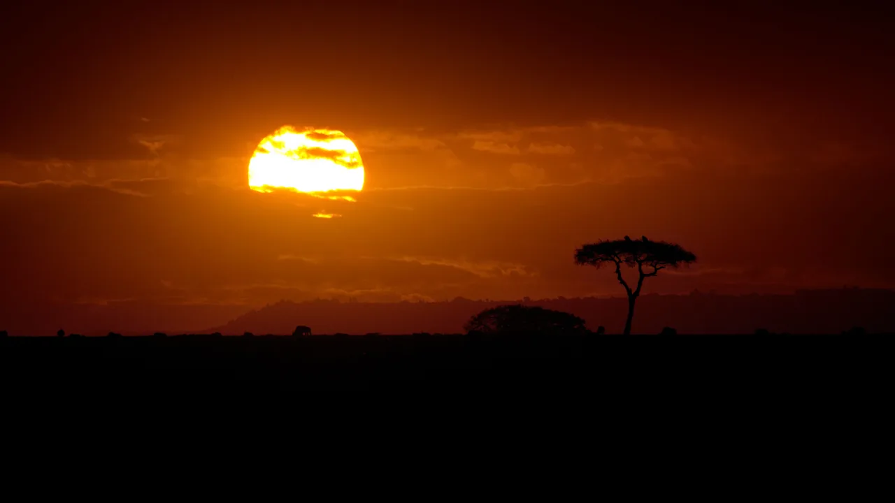

Journeys into the wild.
Twenty-nine private itineraries across northern Tanzania. Every one can be reshaped around your dates, your pace and what draws you to Africa.
29 journeys found
All safari itineraries

Tarangire & Manyara Trip
Tarangire and Lake Manyara

Lake Manyara & Ngorongoro Hidden Facts
Lake Manyara and Ngorongoro Crater
Tarangire and Ngorongoro Trip
Tarangire and Ngorongoro Crater
Best Tarangire, Ngorongoro & Manyara Tour
Tarangire Ngorongoro Crater and Manyara

Serengeti & Ngorongoro Essentials
Serengeti and Ngorongoro Crater

Smart Serengeti and Ngorongoro Adventure
Serengeti and Ngorongoro Crater

Arusha NP, Tarangire & Ngorongoro Crater
Arusha Park, Tarangire and Ngorongoro Crater

Magic of Tarangire, Serengeti and Ngorongoro Adventure
Serengeti and Ngorongoro Crater

Manyara, Serengeti & Ngorongoro
Lake Manyara, Serengeti and Ngorongoro Crater

Amazing Serengeti and Ngorongoro Trip
Serengeti and Ngorongoro Crater

Winter Great Migration during Calving Season
Ndutu Serengeti and Ngorongoro Crater

Tarangire, Ngorongoro & Manyara Trip
Tarangire, Ngorongoro and Lake Manyara

Beauty of Serengeti & Ngorongoro
Serengeti and Ngorongoro Crater
The Perfect Northern Circuit
Tarangire, Ngorongoro, Serengeti and Lake Manyara

Majestic Super Great Migration at Mara River
Serengeti and Ngorongoro Crater

Arusha NP, Tarangire, Eyasi & Manyara
Arusha Park, Tarangire, Ngorongoro, Eyasi and Lake Manyara
Amazing Tarangire, Serengeti, Ngorongoro & Manyara Tour
Tarangire, Ngorongoro, Serengeti and Lake Manyara

Wildlife Safari & Authentic African Culture
Tarangire, Serengeti, Lake Eyasi and Ngorongoro

Amazing Big Five Wildlife
Tarangire, Ngorongoro, Serengeti and Lake Manyara

The Complete Northern Circuit
Arusha NP, Tarangire, Serengeti, Ngorongoro and Lake Manyara

The Great Migration at Mara River Crossing
Tarangire, Central Serengeti, Northern Serengeti and Ngorongoro Crater
Tanzania Authentic Wildlife
Tarangire, Serengeti, Ngorongoro Crater and Manyara

Magic Great Migration at Mara River Crossing
Tarangire, Central Serengeti, Northern Serengeti and Ngorongoro Crater

Tanzania Safari & Zanzibar Shore
Tarangire, Serengeti, Ngorongoro, Manyara & Zanzibar
Tanzania Great Migration at Mara River Crossing
Tarangire, Central Serengeti, Northern Serengeti and Ngorongoro Crater
Great Migration Safari & Zanzibar Beach
Tarangire, Central Serengeti, Northern Serengeti and Ngorongoro Crater

Tarangire, Manyara, Serengeti, Ngorongoro & Zanzibar Adventure
Tarangire, Manyara, Serengeti, Ngorongoro and Zanzibar

Spectacular Tanzania: Big Cats, Big Five & Culture
Tarangire, Serengeti, Ngorongoro Crater, Lake Eyasi and Lake Manyara
Majestic Great Migration Safari at Mara River Crossing
Tarangire, Central Serengeti, Northern Serengeti and Ngorongoro Crater

Let us draw you a new route.
Every itinerary is a starting point. Tell us your dates and dreams and we will tailor the journey around you.